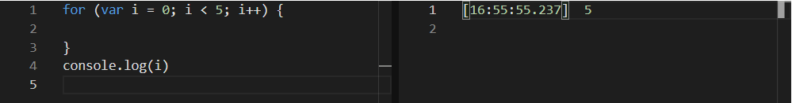
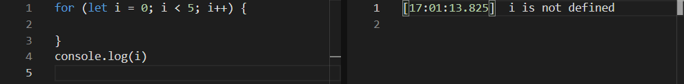
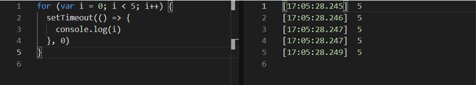
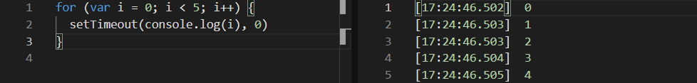
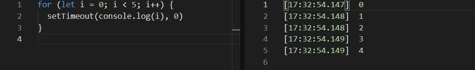
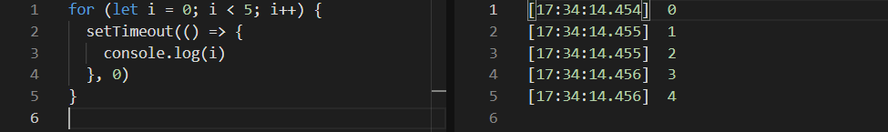

js中for循环let与var
今天在看js红宝书回顾基础查漏补缺时，看到了let和var的区别一块，看完又理解更深一层，说说自己的看法，记录一下。
首先在for循环中使用var声明迭代变量，书中说的是会渗透到循环外部：

可以看到，将控制台打印写在for循环的外部，控制台依然能够打印出已经循环完的变量 i （5）。
而当for循环里定义迭代变量的换为let时，就不会出现这种情况：

可以看到控制台显示 i 未定义。这是因为使用let定义的变量，作用域只限于for循环块内部，不会出现var的迭代变量渗透到循环外部的问题。
上面的很基础，但是下面的一个例子就很有意思了

看到代码，一开始基础不好的同学可能会以为是不是理所当然的输出（0，1，2，3，4） ？我一开始也是这样以为。可是输出结果却是（5，5，5，5，5）？这就涉及到 JS 的运行机制了。
大家都知道，JS是单线程的环境，也就是说，代码执行的顺序是从上到下，依次执行，同一时间只能执行一个任务。这意味着所有的任务需要排队，上一个任务执行完毕后才会执行下一个任务。而 JS 内部将所有的任务分为两种：同步任务和异步任务。
同步任务刚刚已经解释过了，上一个任务执行完毕才会进行下一个任务。而异步任务不进入主线程，而是进入“任务队列”，“任务队列”通知主线程某个异步任务需要执行时，该任务才会进入主线程执行。
在所有同步任务执行完成之前，任何异步任务是不会执行的。可能有的小伙伴还是很迷惑，那么看看下一段代码就应该清楚了。

看出两者的差别了吗？上面一段setTimeout使用了箭头函数。也就是说，该setTimeout已经是一个单独的异步任务。这也就意味着在for循环这个任务结束前，setTimeout是不会执行的。而当for循环结束后，此时的 i 已经迭代为5，所以也就输出 （5，5，5，5，5）。
那如果我们使用let会是什么情况？


有意思的情况出现了，两者居然都是 （0，1，2，3，4）。这就是let和var的区别了。我们知道，使用var定义的for循环中的迭代变量一直是全局变量，当 i 在迭代时一直都是操控一个全局变量 i 。而let定义的迭代变量作用域为块级作用域，而不是全局。全局作用域下，for循环执行完后setTimeout会去寻找的 i 是全局下的 i ，在同一个作用域下，所以会是5个5。
而在块级作用域下，setTimeout函数也会在里面。也就是说，随着for循环的迭代，我们拥有5个块级作用域，每个块级作用域下的setTimeout都会寻找当前块级作用域下的 i ，所以每一次的打印都会是不同的 i ，也就是不同的值。
这就是以上我对let与var在实际情况中相同条件下不同意义的理解，希望能给到阅读此博客的同学一点帮助。
本博客所有文章除特别声明外，均采用 CC BY-SA 4.0 协议 ，转载请注明出处！